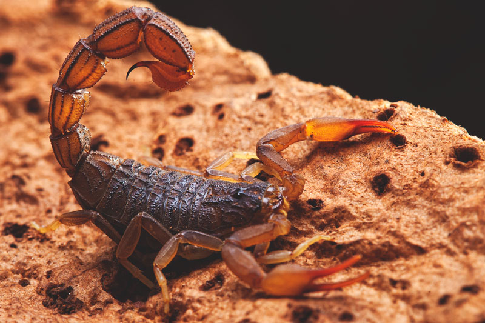
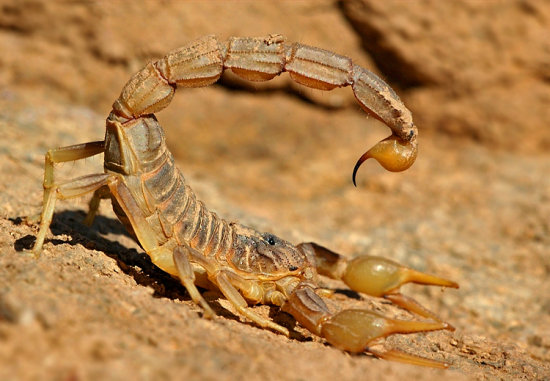

Ataque y Defensa
El papel de los escorpiones en los ecosistemas de los que forman parte es el de depredadores. Son voraces comedores de otros invertebrados, entre los que abundan los insectos tesrrestres, tales como los grillos, las tijeretas, o las larvas de escarabajo. Sin embargo, debido a su tamaño, relativamente pequeño, también son presas de un buen número de animales mayores, entre los que destacan las aves y algunos mamíferos. En consecuencia, estos antiguos animales han debido desarrollar estrategias que les permitan tanto atacar a sus presas como defenderse de sus posibles depredadores.
El papel de los escorpiones en los ecosistemas de los que forman parte es el de depredadores. Son voraces comedores de otros invertebrados, entre los que abundan los insectos tesrrestres, tales como los grillos, las tijeretas, o las larvas de escarabajo. Sin embargo, debido a su tamaño, relativamente pequeño, también son presas de un buen número de animales mayores, entre los que destacan las aves y algunos mamíferos. En consecuencia, estos antiguos animales han debido desarrollar estrategias que les permitan tanto atacar a sus presas como defenderse de sus posibles depredadores.

Perfectamente dotados por la evolución con unos órganos sensoriales muy especializados, los escorpiones son capaces de seguir el rastro oloroso que dejan sus presas; una vez detectado ese olor, inician su cacería. La velocidad a la que el escorpión puede desplazarse por el suelo es escasa, muy inferior a la que posee un grillo o la mayoría de los escarabajos, de modo que ha desarrollado una técnica depredadora basada en el acercamiento sigiliso y la captura mediante un rápido movimiento de sus pinzas. Cuando la presa está bien sujeta, el animal le clava el aguijón en su parte más blanda y le inocula el veneno que la paraliza.
VENENO
Pero el veneno tiene, además, otra función: la defensa. Las sustancias tóxicas de muchas especies de escorpiones son lo bastante potentes como para provocar serios daños a cualquier animal de tamaño medio (algunas pueden llegar a matar a una persona), de manera que, cuando se ve amenazado, el escorpión levanta su cola y mueve su aguijón a un lado y al otro para advertir a su enemigo de que puede ser una mala idea intentar su captura.
Los escorpiones utilizan sus cuerpos como mecanismo de defensa natural ante sus depredadores. Son capaces de morder e inyectar el veneno cuando se sienten amenazados. Esta es la razón por la cual las personas pueden ser picadas también, ya que han alterado el medio ambiente de estas criaturas, las cuales responden actuando en defensa propia.
El nivel de la defensa de los escorpiones depende de la especie a la que pertenecen, algunos son tan fuertes que pueden matar a un ser humano, sin embargo otros son débiles y sólo pueden afectar a los insectos muy pequeños. En ello también influye la ubicación, pues hay entornos donde un escorpión que no tenga veneno de gran potencia, no podrá sobrevivir.
La captura de presas para el escorpión implica ser capaz de sorprenderlas. Para ello inyecta el veneno, logrando paralizar a la presa si esta es grande, o matándola si es pequeña. El veneno empezará a descomponer y licuar el interior de la misma, dejando todo listo para que el escorpión pueda succionarlo.
Hay dos formas en que el escorpión captura a sus presas. Una se basa en la decisión y salir al acecho debido a que son cazadores capaces de introducirse en las madrigueras de roedores, lagartijas e insectos. No parece importarles tratar de cazar presas más grandes que ellos y rara vez se alimentan de algo que ya está muerto. La otra forma radica en la espera paciente y estar bien escondido. Ellos serán capaces de cavar en el suelo o la arena y hacer una madriguera, donde van a esperar que la presa aparezca para sorprenderla. Este es un proceso ventajoso, especialmente con la presa que puede ser mucho mayor que ellos.

Los escorpiones controlan muy bien su metabolismo, esto significa que la caza no supone mucho estrés para ellos. Se pueden alimentar todos los días, cada varios días o pocas veces al año. No van a permitir que las oportunidades de comer pasen inadvertidas, pero no morirán si la comida escasea.
Además tienen un exoesqueleto muy duro que les ayuda a defenderse de los depredadores, así como la capacidad de mezclarse con el entorno gracias a su coloración. La coloración fluorescente de algunas especies de escorpiones también funciona como un mecanismo de defensa, pues avisa de lo que se avecina, haciendo que opten por mantener distancia.
Otra característica del escorpión que le facilita tanto la captura de las presas como a defenderse, es el cuerpo plano que poseen y que les permite deslizarse rápidamente bajo las rocas o a través de las grietas cuando sea necesario.
Por otro lado, las madres frecen protección a sus crías permitiéndoles subirse a su espalda para que se aferren allí durante largos períodos de tiempo. De esta forma permanecen con ella hasta que ocurra la primera etapa de muda y serán menos propensos a convertirse en víctimas de los depredadores durante las primeras semanas de vida.
No hay dudas de que el cuerpo del escorpión está bien diseñado, cuya anatomía tanto interna como externa, les permite maximizar su potencial. No sólo tienen una gran oportunidad de permanecer lejos de los depredadores, sino también tienen un alto índice de éxito para encontrar comida.